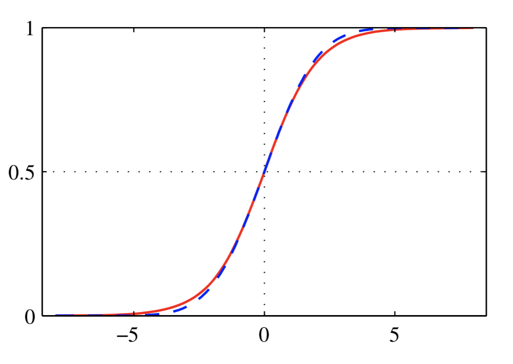

分类方法可分为三种：判别公式，生成模型和判别模型。生成模型和判别模型都是概率框架下的方法，不管是做分类或是做回归都有两步：
- 推断(inference stage)：推断假设的概率模型中的参数，得到概率分布
- 决策(decision stage)：选择适合的优化目标，根据概率分布决定最终的分类结果
在分类问题中，在决策阶段，需要关注的是判别概率分布$p(C_k|\mathbf{x})$。比如，如果优化目标是最大化正确率：
其中$p(correct)$表示预测对的期望，其最优解是将每个样本$\mathbf{x}$，将其分配到$p(\mathbf{x},C_k)$最大的那个类。如下图所示：
最优的分界面是$x = x_0$。因为$p(\mathbf{x})$是固定的，$p(\mathbf{x},C_k)$实际上是由$p(C_k|\mathbf{x})$决定。
生成模型和判别模型的区别
不管是生成模型还是判别模型，对于分类，其最终的落脚点都是判别概率$p(C_k|\mathbf{x})$，但是他们获得判别概率的方式不一样。对于贝叶斯公式：
判别公式直接对$p(C_k|\mathbf{x})$进行建模，生成模型对$p(\mathbf{x},C_k)$或者$p(\mathbf{x}|C_k)$与$p(C_k)$进行建模。如果对$p(\mathbf{x},C_k)$进行建模，可通过计算边缘概率得到$p(\mathbf{x})$，如果对$p(\mathbf{x}|C_k)$与$p(C_k)$进行建模，通过条件概率公式可以得到$p(\mathbf{x},C_k)$进而得到$p(\mathbf{x})$。能否直接或间接对$p(\mathbf{x})$进行建模是生成模型和判别模型的本质区别。
生成模型分类
神奇的变换
在正式讲具体生成之前，先看一个神奇的变换。
对于二分类，判别概率为：
其中
对于多分类：
其中:
连续特征
假设以类别条件概率$p(\mathbf{x}|C_k)$服从高斯分布：
并且每一个类的协方差矩阵$\Sigma$相同。考虑二分类，将式(3)代入(1)中可得到：
其中:
因为$\Sigma$相同，二次项抵消了，所以可以得到关于$\mathbf{x}$的线性形式，也因此最终的分界面是线性的。如果协方差不同，最终的非线性的。
如上图所示，绿色类别和红色类别协方差相同，因此右边的分界面是线性的。与蓝色的协方差不同，因此分界面是非线性的。
对于K类，同样可以得到类似结果，式(2)中的
其中：
模型求解
上一节已经对$p(\mathbf{x}|C_k)$进行了建模，要得到联合概率还需要对$p(C_k)$建模。对于二分类问题，这里简单假设$p(C_1)=\pi,p(C_2)=1-\pi$。则：
则似然函数为：
利用最大似然估计可求解。
离散特征
对于离散特征，比如有D个特征，每个特征取值0或1，这个时候假设类别条件概率是高斯分布不合适，可采用二项分布(这里采用朴素贝叶斯的假设，假设每个特征相互独立)：
使用该方式同样可以得到线性的分界面：
为什么会得到线性分界面
通过上述推导可以发现，不管假设类别条件概率$p(\mathbf{x}|C_k)$服从高斯分布还是二项分布，最终得到的分界面都是线性的，为什么会这样呢？
不管是高斯分布还是二项分布，都属于指数分布的一种。指数分布的一般形式是：
引入放缩参数（正太分布里面的方差）后：
高斯分布是指数分布好理解，对于二项分布：
也可以看成指数分布的形式。
实际上，只要假设$p(\mathbf{x}|C_k)$服从指数分布$p(\mathbf{x}|\eta_k,s)$，并且类别之间共享$s$，$u(\mathbf{x})=x$，那么得到的分界面就是线性的。
对于二分类：
对于多分类：
判别模型分类
使用判别模型进行分类会直接对$p(C_k|x)$进行建模，判别模型的好处是：
- 学习的参数更少
- 效果可能更好
下节有具体讲解。
Logistic regression
对于二分类问题，在生成模型中假设类别条件概率$p(\mathbf{x}|C_k)$为高斯分布得到式(4)所示形式：
其中$\mathbf{w}和w_0$由式(5)组成。既然$\mathbf{w}$是还是由参数决定的，为什么我们不直接学习$\mathbf{w}$？Logisitic regression就是这么做的。
原来使用生成模型的时候，对于二分类问题需要学习的参数有：$\mu_1,\mu_2,\Sigma$和$\pi$。假设数据是$M$维，总参数个数为：$M + M +(M+1)M/2+1=(M+5)M/2+1$，是随着$M$二次增长。
而使用Logisitic Regression需要学习的参数仅$M$个，随着$M$线性增长。
另一方面，由于原来生成模型对$\Sigma$有相同性假设，会作用到$\mathbf{w}$上，会限制最终模型，而判别模型直接学习$\mathbf{w}$则不会存在这个问题，效果可能更好。
对于给定数据集$\lbrace x_n,t_n \rbrace _1^{N}$，似然函数为：
可使用最大似然估计求解：
有个很有意思的观察：
即如果样本线性可分，最优的模型预测结果必须无限接近真实标签。考虑到sigmoid函数的形状，即要求$\mathbf{w^Tx}+w_0$趋近于$\pm \infty$，所以$\mathbf{w}$的模也会趋近于无穷。这个时候对于第$k$类样本，其预测概率$p(C_k|x) \rightarrow 1$，发生严重过拟合。
这个是证明最大似然估计存在过拟合问题的一个具体例子，这种情况可以通过最大后验估计缓解（等价于加入正则）。
以上是对于二分类问题的处理，对于多分类问题处理方法类似，其模型假设为：
其中$a_k = \mathbf{w^Tx}$。似然函数如下：
剩余通过最大似然估计求解即可。
Probit regression
生成模型中假设类别条件概率$p(\mathbf{x}|C_k)$服从指数分布可以得到式（4）和式（7）的简单形式，但是并不是所有的假设都能得到这种形式，Probit regression是一种更一般的线性分类模型。
对于二分类问题，线性分类模型的一般形式为：
在线性回归中$f$是sigmoid函数，其可以看成一个概率密度累积函数，更一般的形式是：
其曲线如图下图中红色曲线所示：
符合式（9）形式的激活函数称之为Probit function，使用Probit function作为激活函数的线性分类模型叫做Probit regression。
Probit function的几个代表是:
Inverse probit function：
即正太分布的概率密度累积函数，其形状和sigmoid函数很相似，其形状如下图虚线所示，红线表示sigmoid函数。
eft function / error function
不管是Inverse probit function还是eft function，都是$\exp(-x^2)$，相较于logistic regression的$\exp(-x)$，其对噪声更为敏感。
如果处理噪声？
在实际情况中，不可避免得会有些数据被打上了错误标签，从而产生噪声。使用概率模型建模可以很好处理这一点：
$\epsilon$是个很小的参数，表示有$\epsilon$的概率打错标签。